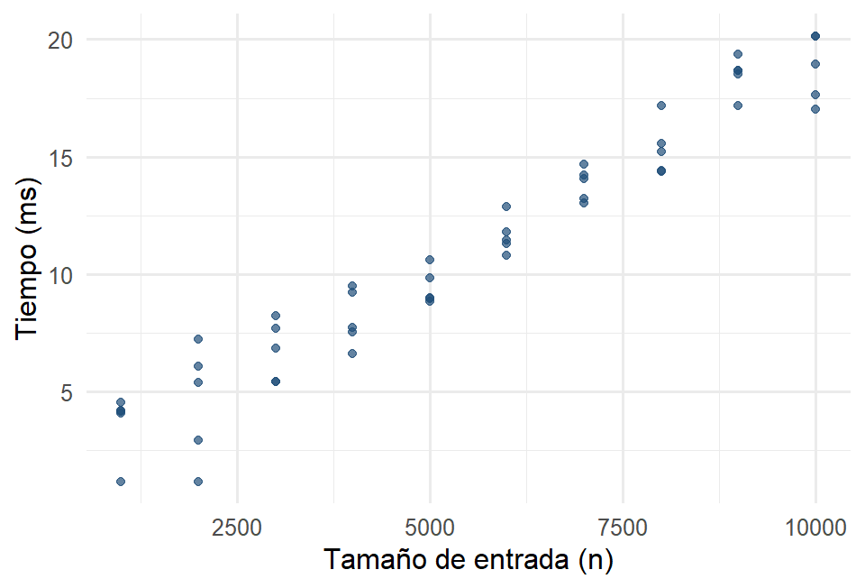
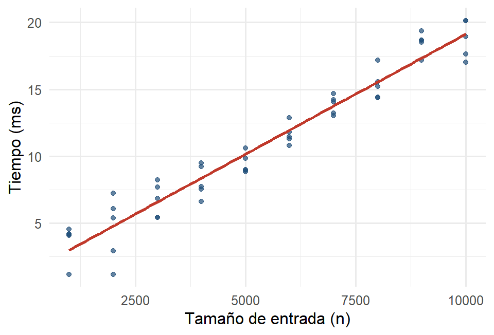
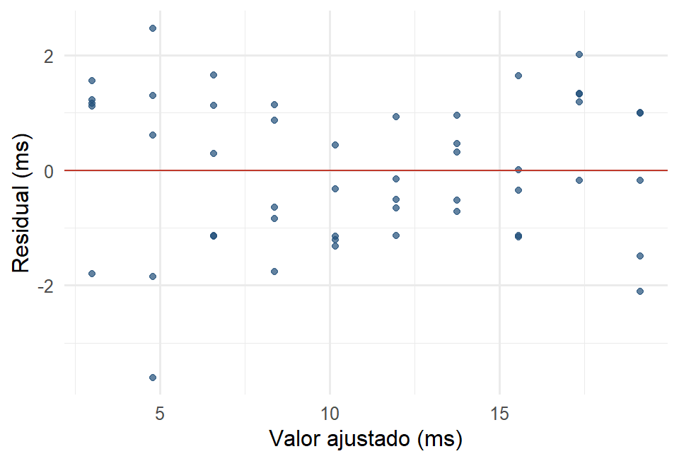

alg <- read.csv("datos/algoritmos_regresion.csv")
mac <- filter(alg, entorno == "Mac")
ggplot(mac, aes(x = n, y = tiempo_ms)) +
geom_point(color = "#1F4E79", alpha = 0.7) +
labs(x = "Tamaño de entrada (n)", y = "Tiempo (ms)")
El contenido de este capítulo está completo, pero todavía no pasa por la revisión final de redacción. Se avisará en clase cuando quede listo para estudiar de aquí. Mientras tanto se puede consultar, con esa advertencia.
Hasta aquí describimos una variable a la vez. Casi siempre la pregunta interesante es sobre dos: ¿el tiempo de ejecución crece con el tamaño de entrada?, ¿un pico más largo viene con un pico más profundo? Este capítulo cierra la Parte I estudiando cómo se relacionan dos variables cuantitativas.
La primera herramienta —siempre— es graficar. En un diagrama de dispersión cada individuo es un punto: una variable en el eje horizontal (la regresora o explicativa, x) y otra en el vertical (la respuesta o dependiente, y).
Usemos los tiempos de ejecución de un algoritmo según el tamaño de la entrada.
alg <- read.csv("datos/algoritmos_regresion.csv")
mac <- filter(alg, entorno == "Mac")
ggplot(mac, aes(x = n, y = tiempo_ms)) +
geom_point(color = "#1F4E79", alpha = 0.7) +
labs(x = "Tamaño de entrada (n)", y = "Tiempo (ms)")
Al leer una nube de puntos nos fijamos en tres rasgos: la dirección (¿sube o baja?), la forma (¿recta o curva?) y la fuerza (¿los puntos están apretados sobre un patrón o dispersos?). Aquí la relación es creciente, aproximadamente lineal y bastante fuerte.
El coeficiente de correlación de Pearson, r, resume en un número la fuerza y dirección de una relación lineal. Va de −1 a 1: cerca de 1 es una relación lineal creciente fuerte; cerca de −1, decreciente fuerte; cerca de 0, sin relación lineal.
cor(mac$n, mac$tiempo_ms)
#> [1] 0.9711912Que dos variables estén correlacionadas no significa que una cause a la otra. El clásico ejemplo: las ventas de helado y los ahogamientos suben juntos, pero ninguno causa al otro (los une el calor del verano). La correlación describe asociación; para hablar de causa necesitamos un experimento (Parte II). Además, r solo mide relación lineal: una relación fuerte pero curva puede dar r cercano a 0.
Leer un número como “r = 0.6” no dice mucho hasta que se ve la nube que le corresponde. Al mover el deslizador se entrena el ojo: para cada valor de \(r\), así se ven los datos.
Con \(r\) cerca de 0 la nube es un borrón redondo: conocer \(x\) no ayuda a adivinar \(y\). Conforme \(|r|\) crece, la nube se aprieta contra la recta hasta volverse casi una línea en \(\pm 1\). Nótese también que el signo solo cambia la inclinación, no la fuerza: \(r = -0.8\) es tan fuerte como \(r = 0.8\). Un ejercicio útil: poner el deslizador en 0.5 y observar cuánta dispersión sigue habiendo — mucha gente sobrestima lo que significa “correlación moderada”.
Cuando la relación es lineal, podemos resumirla con una recta: \(\hat{y} = b_0 + b_1 x\). El método de mínimos cuadrados elige la recta que hace más pequeña la suma de los errores al cuadrado (las distancias verticales de los puntos a la recta). En R se ajusta con lm() (“modelo lineal”).
modelo <- lm(tiempo_ms ~ n, data = mac)
coef(modelo)
#> (Intercept) n
#> 1.189200000 0.001794473ggplot(mac, aes(x = n, y = tiempo_ms)) +
geom_point(color = "#1F4E79", alpha = 0.7) +
geom_smooth(method = "lm", se = FALSE, color = "#C0392B") +
labs(x = "Tamaño de entrada (n)", y = "Tiempo (ms)")
La pendiente (\(b_1\)) es lo que más nos dice: por cada elemento adicional en la entrada, el tiempo aumenta aproximadamente ese número de milisegundos. La ordenada al origen (\(b_0\)) es el tiempo estimado cuando \(n = 0\); muchas veces es solo un punto de anclaje sin sentido físico (aquí, un “costo fijo” del algoritmo). Conviene interpretar la pendiente en las unidades del problema.
En este capítulo la recta es descripción: resume la tendencia. En el Capítulo 12 volveremos a ella para hacer inferencia: ¿la pendiente es realmente distinta de cero o pudo salir por azar?
Vale la pena obtener una recta con lápiz y papel, aunque sea una vez. Estos son cinco tiempos de ejecución (en ms) para entradas de 1 a 5 miles de elementos:
| \(x\) (miles) | 1 | 2 | 3 | 4 | 5 |
|---|---|---|---|---|---|
| \(y\) (ms) | 3.1 | 4.8 | 6.4 | 8.3 | 9.9 |
Paso 1. Las cinco sumas. Todo el cálculo se apoya en ellas:
\[\sum x = 15, \quad \sum y = 32.5, \quad \sum xy = 114.6, \quad \sum x^2 = 55, \quad \sum y^2 = 240.51\]
Paso 2. Las sumas de cuadrados corregidas.
\[S_{xx} = \sum x^2 - \frac{(\sum x)^2}{n} = 55 - \frac{15^2}{5} = 55 - 45 = 10\]
\[S_{yy} = \sum y^2 - \frac{(\sum y)^2}{n} = 240.51 - \frac{32.5^2}{5} = 29.26\]
\[S_{xy} = \sum xy - \frac{(\sum x)(\sum y)}{n} = 114.6 - \frac{15 \times 32.5}{5} = 114.6 - 97.5 = 17.1\]
Paso 3. La correlación.
\[r = \frac{S_{xy}}{\sqrt{S_{xx}S_{yy}}} = \frac{17.1}{\sqrt{10 \times 29.26}} = \frac{17.1}{17.106} = 0.9997\]
Paso 4. La recta.
\[\hat{\beta}_1 = \frac{S_{xy}}{S_{xx}} = \frac{17.1}{10} = 1.71, \qquad \hat{\beta}_0 = \bar{y} - \hat{\beta}_1\bar{x} = 6.5 - 1.71(3) = 1.37\]
La recta ajustada es \(\hat{y} = 1.37 + 1.71x\).
Comprobación en R:
xs <- c(1, 2, 3, 4, 5)
ys <- c(3.1, 4.8, 6.4, 8.3, 9.9)
cor(xs, ys)
#> [1] 0.9996753
coef(lm(ys ~ xs))
#> (Intercept) xs
#> 1.37 1.71Coinciden: \(r = 0.9997\) y la recta \(\hat{y} = 1.37 + 1.71x\). La pendiente dice que cada mil elementos adicionales agregan 1.71 ms.
Vale la pena mirar la estructura del cálculo. Las tres cantidades \(S_{xx}\), \(S_{yy}\) y \(S_{xy}\) resumen todo lo que hace falta: la dispersión de \(x\), la de \(y\) y cómo varían juntas. A partir de ellas salen tanto la correlación como la recta, lo cual explica por qué ambas responden a la misma pregunta desde ángulos distintos. Y la fórmula \(\hat{\beta}_0 = \bar{y} - \hat{\beta}_1\bar{x}\) revela algo que no se ve en la gráfica: la recta de mínimos cuadrados siempre pasa por el punto \((\bar{x}, \bar{y})\), el centro de gravedad de la nube.
Estos mismos cinco datos se retoman en el Capítulo 12 para calcular a mano la incertidumbre de la pendiente.
Un residual es lo que la recta no explicó: la diferencia entre el valor observado y el predicho, \(y - \hat{y}\). Si la recta es un buen resumen, los residuales no deben mostrar ningún patrón: solo ruido alrededor de cero. Graficarlos contra los valores ajustados es el chequeo básico.
mac_aug <- mac |>
mutate(ajustado = fitted(modelo),
residual = resid(modelo))
ggplot(mac_aug, aes(x = ajustado, y = residual)) +
geom_point(color = "#1F4E79", alpha = 0.7) +
geom_hline(yintercept = 0, color = "#C0392B") +
labs(x = "Valor ajustado (ms)", y = "Residual (ms)")
Buscamos una nube sin estructura, repartida arriba y abajo del cero. Si apareciera una curva (forma de U), la relación real no sería del todo lineal; si el ancho creciera hacia la derecha (forma de embudo), la dispersión no sería constante. Estos diagnósticos serán obligatorios cuando hagamos inferencia con regresión.
Cuando hay varias variables cuantitativas, una matriz de correlación muestra el r de cada par. Con los pingüinos:
penguins |>
select(bill_length_mm, bill_depth_mm, flipper_length_mm, body_mass_g) |>
cor(use = "complete.obs") |>
round(2)
#> bill_length_mm bill_depth_mm flipper_length_mm body_mass_g
#> bill_length_mm 1.00 -0.24 0.66 0.60
#> bill_depth_mm -0.24 1.00 -0.58 -0.47
#> flipper_length_mm 0.66 -0.58 1.00 0.87
#> body_mass_g 0.60 -0.47 0.87 1.00Cada celda es la correlación de un par de variables (la diagonal es 1: toda variable se correlaciona perfecto consigo misma). Se lee de un vistazo: el largo de la aleta y la masa corporal van muy de la mano (0.87), mientras que el largo y la profundidad del pico casi no se relacionan de forma lineal (−0.24).
Ampliamos el mapa de decisión para dos o más variables cuantitativas:
| Mi pregunta | Herramienta |
|---|---|
| ¿Cómo se ven relacionadas dos variables? | Diagrama de dispersión |
| ¿Qué tan fuerte es su relación lineal? | Coeficiente de correlación r |
¿Cómo predigo y a partir de x? |
Recta de regresión (lm) |
| ¿La recta ajusta bien? | Análisis de residuales |
| ¿Cómo se relacionan varias variables? | Matriz de correlación |
Advertencia permanente: correlación describe asociación, no causa.
La matriz de correlación y la covarianza son el punto de partida de técnicas más avanzadas del análisis multivariado (componentes principales, reducción de dimensión), que quedan fuera del alcance de este curso. Aquí nos quedamos en el nivel descriptivo; en la Parte III aprenderemos a decidir si estas relaciones son estadísticamente significativas o pudieron surgir por azar.
Para relacionar dos variables cuantitativas: primero un diagrama de dispersión, luego el coeficiente de correlación para medir la fuerza lineal y la recta de mínimos cuadrados para resumir la tendencia y predecir. El análisis de residuales nos dice si la recta es un buen resumen, y la matriz de correlación extiende la idea a varias variables. Cierra aquí la Parte I: ya sabemos explorar datos. En la Parte II veremos de dónde deben venir esos datos para que las conclusiones valgan.
Dispersión y correlación. Con los pingüinos, graficar body_mass_g (y) contra flipper_length_mm (x) y calcula su correlación. Describir dirección, forma y fuerza.
Interpretar la pendiente. Ajustar lm(tiempo_ms ~ n) para el entorno Windows de datos/algoritmos_regresion.csv. ¿Cuántos milisegundos agrega cada elemento adicional? Comparar la pendiente con la de Mac.
Correlación y linealidad. Inventar (o dibuja) un conjunto de puntos con una relación fuerte pero curva y explicar por qué su r puede ser cercano a cero. ¿Qué mostraría el diagrama de dispersión que r esconde?
Residuales. Para el modelo del ejercicio 2, graficar los residuales contra los valores ajustados. ¿Se observa algún patrón? ¿Qué indicaría si lo hubiera?
Causa vs. asociación. Dar un ejemplo, distinto al del helado, de dos variables correlacionadas donde sería un error concluir que una causa la otra. Identificar una posible variable oculta que las relacione.
Matriz de correlación. Calcular la matriz de correlación de las cuatro medidas numéricas de los pingüinos por separado para la especie Gentoo (filter(species == "Gentoo")). ¿Cambian mucho las correlaciones respecto a la matriz global? ¿Por qué podría pasar eso?
1. cor(penguins$flipper_length_mm, penguins$body_mass_g, use = "complete.obs") da aproximadamente 0.87. La relación es creciente, aproximadamente lineal y fuerte: pingüinos con aletas más largas tienden a pesar más. Tiene sentido biológico: ambas variables reflejan el tamaño general del animal.
2. La pendiente de Windows ronda 0.0019–0.0020 ms por elemento, ligeramente mayor que la de Mac (≈0.0018). Interpretación: por cada elemento adicional en la entrada, Windows tarda un poco más. Ojo: la diferencia se ve pequeña porque está en milisegundos por elemento; multiplicada por 10 000 elementos se vuelve visible. Conviene interpretar siempre la pendiente en la escala del problema.
3. El caso clásico es una parábola, por ejemplo puntos sobre \(y = x^2\) con \(x\) entre \(-3\) y \(3\): hay una relación perfectamente determinista, pero \(r \approx 0\) porque la parte creciente y la decreciente se cancelan. El diagrama de dispersión muestra de inmediato la curva que r esconde. Moraleja: nunca debe reportarse r sin haber visto la nube de puntos.
4. Los residuales muestran una curvatura leve (los datos fueron generados con un pequeño término cuadrático). Un patrón en forma de U indicaría que la relación no es del todo lineal y que un modelo curvo ajustaría mejor; un patrón de embudo indicaría que la dispersión crece con el valor ajustado. Estos dos diagnósticos son los que revisaremos formalmente en el Capítulo 12.
5. Ejemplos válidos: el número de bomberos en un incendio y los daños (los une el tamaño del incendio); las ventas de lentes de sol y de trajes de baño (los une la estación del año); el tamaño del pie y la habilidad lectora en niños (los une la edad). En todos, la tercera variable se llama variable de confusión o variable oculta; solo un experimento aleatorizado la neutraliza.
6. Sí cambian, y a veces mucho. La correlación entre el largo y la profundidad del pico pasa de ser negativa en el conjunto global (≈ −0.24) a positiva dentro de cada especie. Esto ocurre porque las especies difieren sistemáticamente en su forma de pico, y mezclarlas crea una tendencia artificial. Es una manifestación de la paradoja de Simpson: una relación puede invertirse al agrupar o desagrupar los datos. Es la razón por la que siempre conviene explorar por subgrupos antes de concluir.